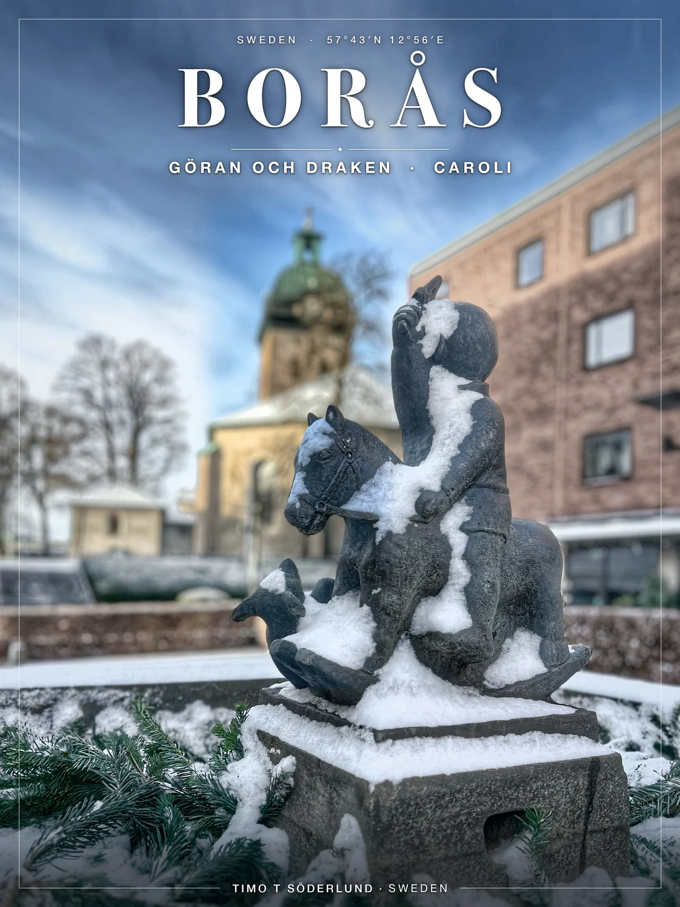

Göran och draken · Caroli
Sven Lundqvist (1953) at Hötorget & Caroli Kyrka (1669) · Borås, Sweden
English
Seen from across snow-blanketed Hötorget in central Borås (Boras), Sweden, four centuries of the city's history meet in a single winter frame. In the foreground, freshly fallen snow traces the back of Sven Lundqvist's (1918–2010) fountain sculpture Göran och draken, inaugurated in 1953—a beloved landmark of Borås's public art heritage where a young boy on a rocking horse raises his wooden sword toward the winter sky above evergreen spruce boughs. Across the historic square—established after the great fire of 1827 where Sjuhärad farmers once traded hay and straw for horses, and lively today with restaurants and cafés—rises Caroli Kyrka (Caroli Church), Borås's oldest preserved building. Completed in 1669 on the medieval church site of Torpa with its tower added in 1681, the church was severely damaged and extensively rebuilt and repaired after the city fires of 1681, 1727, and 1822 (and spared in the fire of 1827), receiving its present tower appearance in the mid-19th century—its spire and green copper roof still watching over Borås today. Photographed by Timo T Söderlund for Borås Poster Project 2026.
Svenska
I denna vintervy över ett snötäckt Hötorget i centrala Borås möts fyra århundraden av stadens historia i ett och samma bildutsnitt. I förgrunden följer den nyfallna snön ryggen på Sven Lundqvists (1918–2010) fontänskulptur Göran och draken, invigd 1953 — ett välkänt verk i Borås rika tradition av offentlig konst där pojken på gunghästen sträcker sitt träsvärd mot vinterhimlen ovanför vintergrönt granris. Bortom det anrika torget — framvuxet efter stadsbranden 1827 som Sjuhäradsbygdens livliga marknadsplats för hö och halm till tidens hästar, och i dag ett uppskattat restaurangtorg — reser sig Caroli kyrka, Borås äldsta bevarade byggnad. Kyrkan stod färdig 1669 på den medeltida kyrkplatsen i Torpa och fick sitt torn 1681, men drabbades hårt och fick återuppbyggas och repareras grundligt efter stadsbränderna 1681, 1727 och 1822 (medan den klarade sig i branden 1827). Tornet fick sitt nuvarande utseende vid 1800-talets mitt och vakar än i dag med sin spira och sitt koppartak över stadens hjärta. Fotograferad av Timo T Söderlund för Borås Poster Project 2026.
Photographer & Edition: Timo T Söderlund · Borås, Sweden (2026)